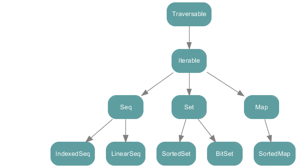
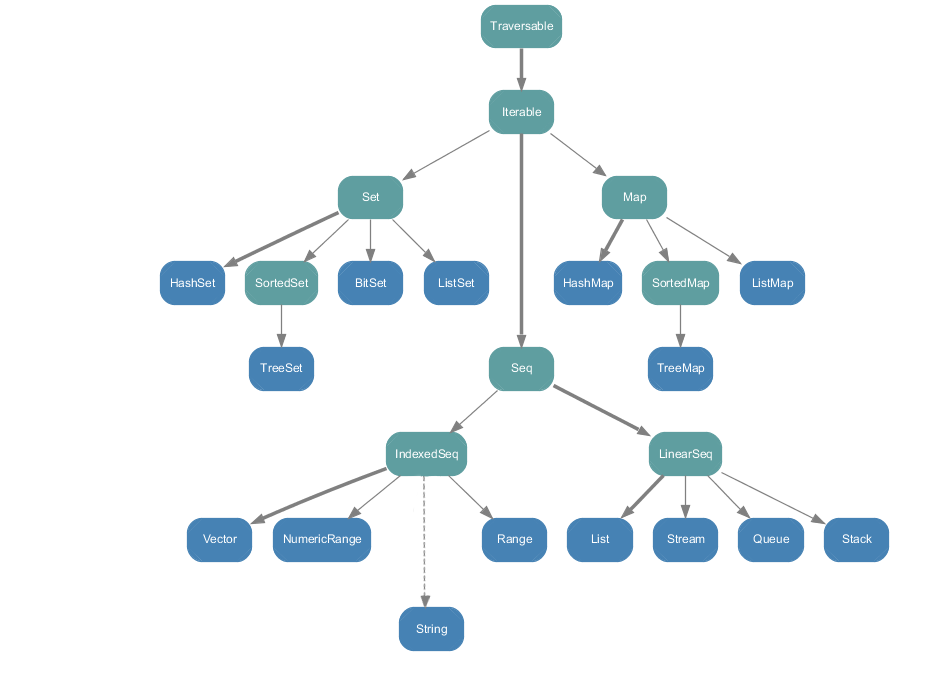

如何在 scala 中科学地操作 collection
在日常项目开发中，我们几乎都会用到Scala中的集合以及一些集合操作。由于 Scala 中的集合操作灵活多变，对于刚接触Scala的开发者，在选用何种集合以及使用何种集合操作就显得不那么合理了，虽然大部分时候都可以解决问题，但是有时候并没有选择最优的方式。科学合理地操作Scala中的集合可以使我们的代码变得更加简洁和高效。
Mutable 和 Immutable 集合
Scala 集合类系统地区分了可变的和不可变的集合。
scala.collection 包中所有的集合类

scala.collection.mutable 中的所有集合类
可变集合，顾名思义，意味着你可以修改，移除或者添加一个元素。

scala.collection.immutable 中的所有集合类
不可变集合，相比可变集合，不可变集合永远不会被改变，但是你仍然可以像可变集合那样操作（修改，添加，删除某个集合元素）不可变集合，只是这些操作在每一种情况下都是返回一个新的集合，同时，原来的集合不会发生改变，由于此特性，不可变集合也是线程安全的，Scala在默认情况下采用的是不可变集合。所以在使用上，优先使用不可变集合。不可变集合适用于大多数情况。

不同集合的使用场景
其中常用的集合有三种：List，Set，Map。
列表 List
List 继承至 Seq，集合中的元素是可以重复的。
e.g.
scala> val l = List(1, 1, 2, 2, 3, 5)
l: List[Int] = List(1, 1, 2, 2, 3, 5)
所以当集合内的元素是可重复的时候，可以选择 List 或者 Seq。
集 Set
Set 中的元素是不可重复的。
e.g.
scala> val s = Set(1, 1, 2, 2, 3, 5)
s: scala.collection.immutable.Set[Int] = Set(1, 2, 3, 5)
所以当集合内的元素是不可重复的时候，选择 Set。
映射 Map
Map 中的元素呈现 key -> value 的形式，其中第一个参数是映射的键，第二个参数是映射的值。且Map中每一个元素的键是唯一的。
e.g.
scala> val m = Map(1 -> 1, 1 -> 3, 2 -> 3, 3 -> 4, 4 -> 4, 5 -> 7)
m: scala.collection.immutable.Map[Int,Int] = Map(5 -> 7, 1 -> 3, 2 -> 3, 3 -> 4, 4 -> 4)
所以当集合中的元素是 key -> value 的形式且每个元素的键不重复的时候，选择 Map。
集合中方法的使用
各集合操作之间的比较
在开始介绍不同方法的使用场景之前，我们先对比一下不同方法操作同一集合所产出的结果有何异同。
map、filter、collect的比较
//定义一个列表
scala> val l = List(1, 2, 3, 4, 5)
l: List[Int] = List(1, 2, 3, 4, 5)
//map操作
scala> l.map(_ * 2)
res0: List[Int] = List(2, 4, 6, 8, 10)
//filter操作
scala> l.filter(_ > 2)
res3: List[Int] = List(3, 4, 5)
//collect操作
scala> l.collect {case i if i > 2 => i * 2}
res1: List[Int] = List(6, 8, 10)
通过以上结果对比我们可以看到：
map 操作得到的集合，除了元素个数和原集合一样，其他都不一样。
filter 操作得到的集合是原集合的子集。
collect 操作得到的集合虽然和原集合不一样，但是仔细观察，可以看到 collect 操作得到的结果是 map 操作得到结果的子集，而且元素的个数和 filter 操作得到的集合元素个数相同。
flatten和flatMap的比较
//定义一个列表
scala> val l = List(List(1, 2, 3), List(4, 5, 6), Seq(7, 8, 9))
l: List[Seq[Int]] = List(List(1, 2, 3), List(4, 5, 6), List(7, 8, 9))
//flatten操作
scala> l.flatten
res5: List[Int] = List(1, 2, 3, 4, 5, 6, 7, 8, 9)
//flatMap操作
scala> l.flatMap(i => i.map(_ * 2))
res6: List[Int] = List(2, 4, 6, 8, 10, 12, 14, 16, 18)
通过以上结果我们可以看到，flatten 和 flatMap 都可可以将嵌套结构扁平化为一个层次的集合，但是：
flatten 仅仅是将嵌套结构扁平化了，并没有改变原来集合内层列表中元素的值。
flatMap 不仅将嵌套结构扁平化了，而且改变了原来集合内层列表中元素的值，其实 flatMap 就是在 flatten 之后再做一个 map 操作。
补充：以上操作返回的都是一个批量的结果，如果要查找某一特定元素，则可以采用类比的方法：
filter -> find
collect -> collectFirst
不同方法的使用场景
通过以上对比，我们对集合中常用方法的操作结果有了一个大致的认识，接下来我们看看在不同场景下如何科学地选择相应的集合操作。
我们先定义一些将要在后面场景中使用的数据结构：
case class Student(
name: String,
age: Int,
sex: String
)
val jilen = Student(
name = "Jilen",
age = 30,
sex = "m"
)
val shaw = Student(
name = "Shaw",
age = 18,
sex = "m"
)
val yison = Student(
name = "Yison",
age = 40,
sex = "f"
)
val l = List(jilen, shaw, yison)
l: List[Student] = List(Student(Jilen,30,m), Student(Shaw,18,m), Student(Yison,40,f))
如上，我们定义了一个学生组成的列表。
场景一：我们要得到这些学生姓名所组成的列表
分析：学生姓名所组成的列表和原列表（学生列表）是不同的，是一个全新的列表，所以这里选用 map
val nameList = l.map(_.name)
nameList: List[String] = List(Jilen, Shaw, Yison)
map 是对集合中的每个元素应用一个函数，返回应用后的元素所组成的集合，通常情况下，map所返回的集合和原集合是是不同类型的集合，也就是一个全新的集合。
场景二：我们要得到所有性别是男（m）的学生所组成的列表
分析：得到的列表还是学生列表，并且该列表是原列表的子集，因为有一个附加条件：男性学生，所以这里选用 filter
val maleList = l.filter(_.sex == "m")
maleList: List[Student] = List(Student(Jilen,30,m), Student(Shaw,18,m))
filter 一般用于移除集合中不满足条件的元素，返回满足条件的元素所组成的集合。 当然，这里用 collect 也可以解决问题：
val maleList = l.collect{case s if s.sex == "m" => s}
maleList: List[Student] = List(Student(Jilen,30,m), Student(Shaw,18,m))
但是对比一下，可以发现filter更加简洁。
场景三： 我们要得到男学生姓名所组成的列表
分析：要得到男学生姓名，我们首先要得到男学生，然后再去获取这些学生的姓名，所以我们很容易采用：
val maleNameList = l.filter(_.sex == "m").map(_.name)
maleNameList: List[String] = List(Jilen, Shaw)
但是通过我们在之前各集合操作之间的比较中所得出的结论，由于男学生姓名列表是一个和原列表（学生列表）完全不同的，并且该列表是学生姓名列表的子集，所以我们可以采用 collect：
val maleNameList = l.collect{case s if s.sex == "m" => s.name}
maleNameList: List[String] = List(Jilen, Shaw)
得到的结果和上面操作的结果一样。
collect 接受的是一个偏函数，对集合中每个元素应用该函数，返回应用后的元素所组成的列表，可以将 collect 看作是先做 filter 操作再做 map 操作：
场景二中的 collect 操作可以看作是：
l.filter(_.sex == "m").map(s => s)
List[Student] = List(Student(Jilen,30,m), Student(Shaw,18,m))
其他常用方法
场景四：现在我们要得到每个学生在列表中的位置以方便给他们编号
分析：我们可以采用 学生 -> 编号 的形式来组织学生与编号之前的关系，这里我们可以采用 zipWithIndex：
l.zipWithIndex
List[(Student, Int)] = List((Student(Jilen,30,m),0), (Student(Shaw,18,m),1),(Student(Yison,40,f),2))
zipWithIndex 将可以将集合内的元素与该元素在集合中的位置组合在一起，其实就是将集合内的元素与该元素的位置组成了一个元组，元组的第二个值是元素在集合中所处的位置。
场景五：现在要将男学生和女学生分组，男学生组成一个集合，女学生组成一个集合
分析：根据场景的描述，新集合内的元素应该是：sex -> List[Student]的形式，这里我们可以采用：groupBy：
val group = l.groupBy(_.sex)
group: scala.collection.immutable.Map[String,List[Student]] = Map(m -> List(Student(Jilen,30,m), Student(Shaw,18,m)), f -> List(Student(Yison,40,f)))
groupBy 就是对集合按照特定的要求进行分组，返回一个 Map类型。